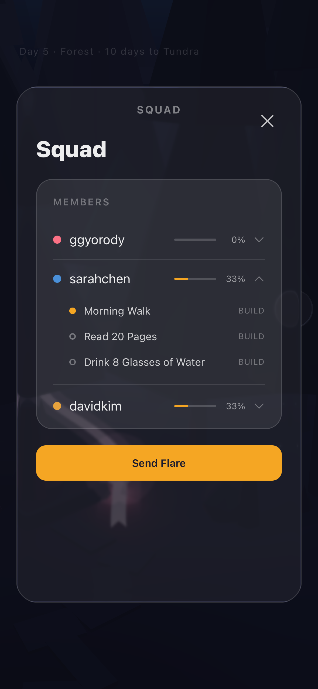
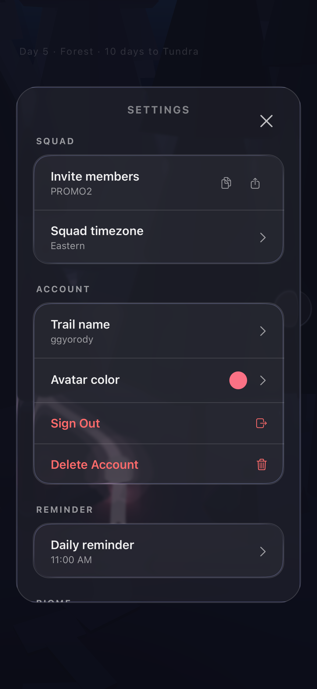
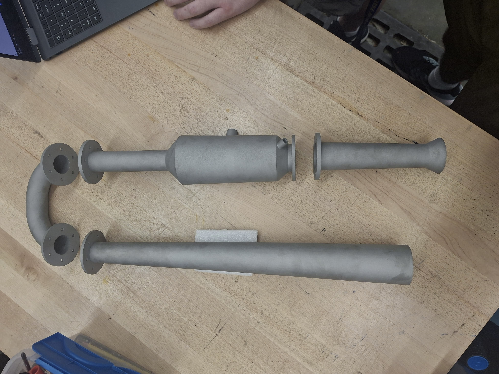
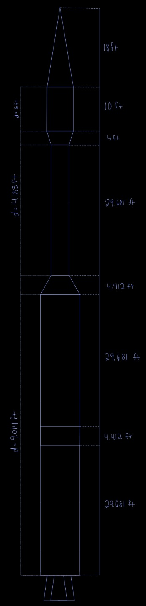
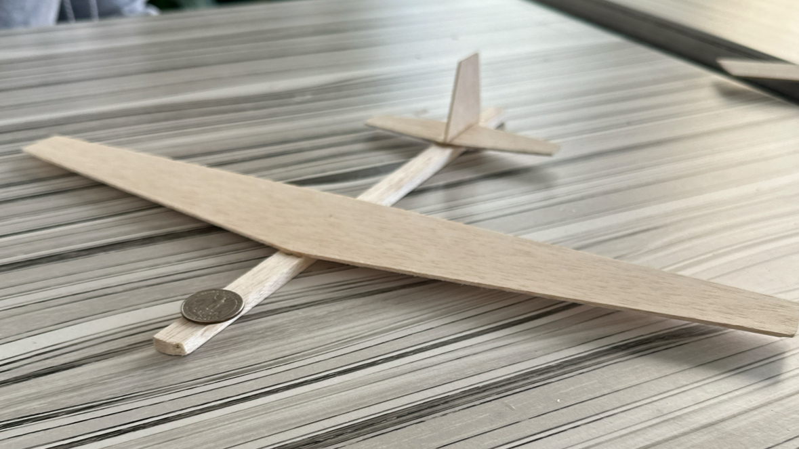
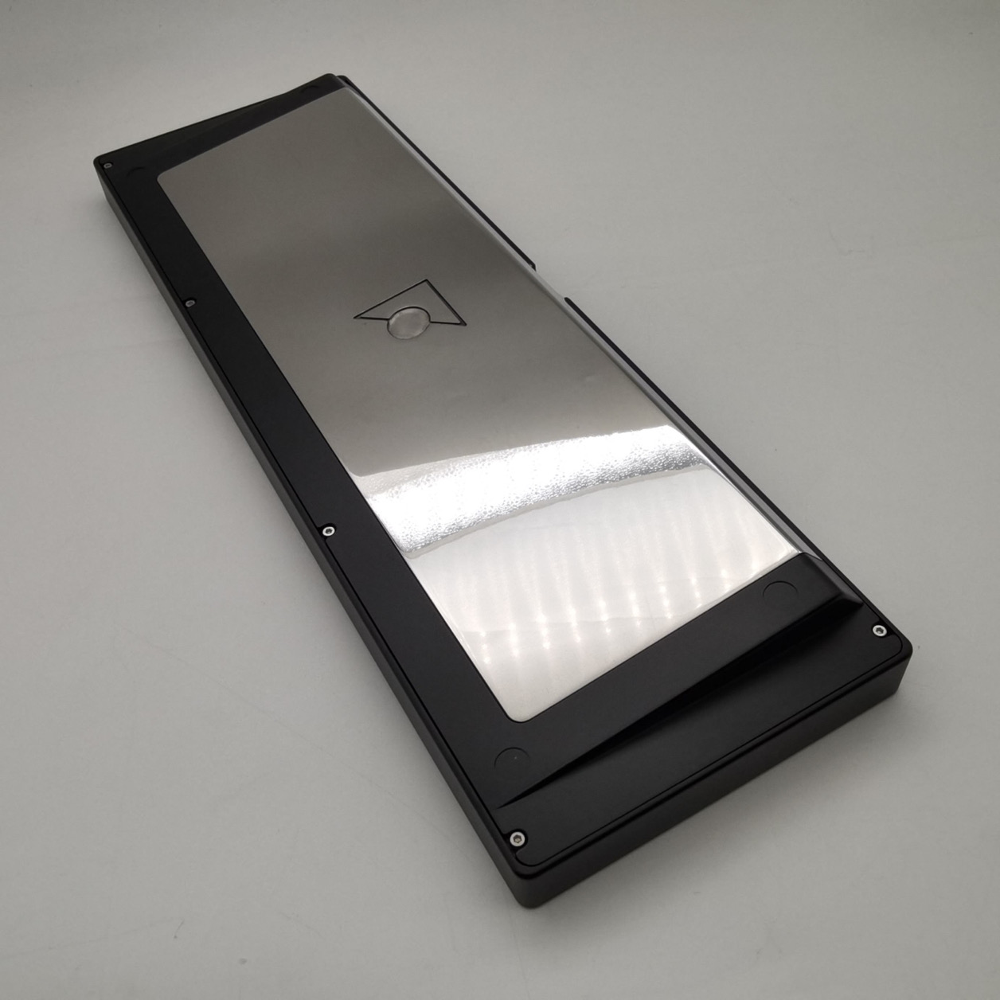
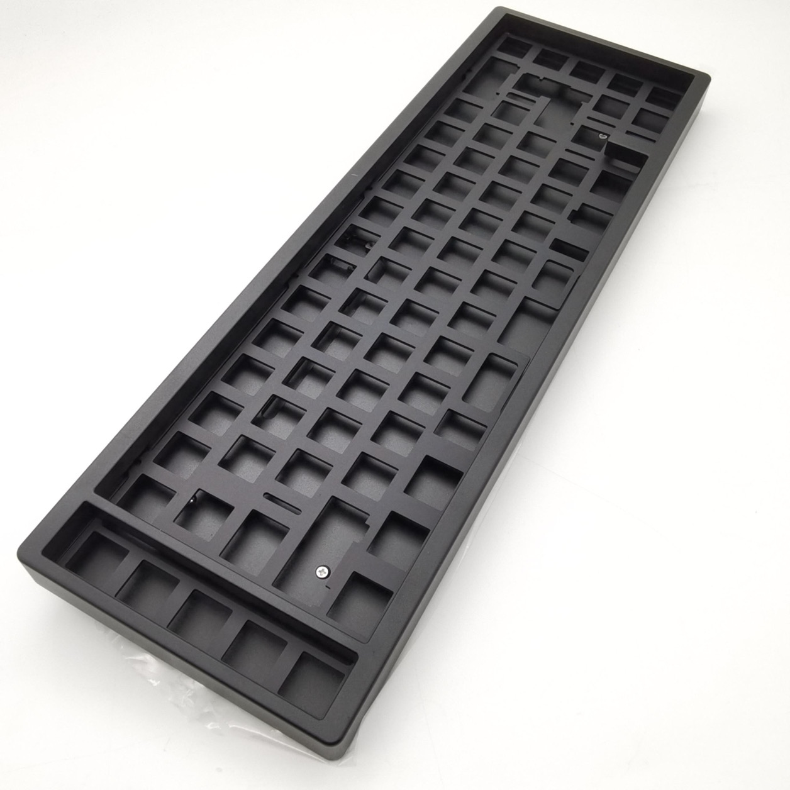

Right now, I'm shipping Expedition
A squad-based habit platform for iOS. Every member's daily progress becomes a trail through one shared forest, so the whole squad can see who showed up. I built it independently.
Enterprise Systems Engineering · ERAU · Class of 2028
I'm a systems engineering student at Embry-Riddle in Daytona Beach. I ship software and hardware, from a closed TestFlight beta to a pulse jet, and I'm looking for an internship or co-op in technical program management or systems engineering.
A squad-based habit platform for iOS. Every member's daily progress becomes a trail through one shared forest, so the whole squad can see who showed up. I built it independently.


I architected it end to end: a React Native and Expo client, a Supabase backend on PostgreSQL with Edge Functions and pg_cron, and a custom real-time 3D layer in Three.js and React Three Fiber. Instancing 400+ environment objects into 3 draw calls holds 60 fps on device with an 8-member squad.
I ran the build as a spec-first, AI-assisted workflow: structured audits and on-device verification tracked 85 defects and resolved 64, including 6 security fixes. I shipped it independently to a 33-user TestFlight beta.
I formed Egg Hatch, LLC to hold Expedition, and I run every cross-functional, non-engineering piece of the business: entity formation, banking and bookkeeping, compliance filings, the Apple Developer Program, App Review submissions, privacy disclosures and TestFlight beta distribution.
Project Initium started as a set of trade studies and is now a manufactured engine body, with hot-fire pending the team's test stand.

I owned research and CAD for an 8-person club team, running trade studies across pulse jet configurations that selected a valveless U-shaped design and set the operating point from chamber volume, fuel flow and resonance frequency.
I modeled the 4-part engine body and its manufacturing drawings in CATIA and ran preliminary Ansys CFD on the design geometry. The body was CNC milled to Embry-Riddle safety requirements.
A conceptual three-stage rocket, 134 feet tall, sized to deliver a 5,000 lb payload to low Earth orbit.

I led a team of four, wrote the charter that defined roles and accountability standards, and ran weekly milestones through to a 20+ page technical report.
I sized the interstage adapters, fairings, bulkheads and tanks in MATLAB, converging on a $23.87M vehicle cost by iterative optimization, then presented our propulsion selection and cost-benefit trade-offs in a formal design review to peers and faculty.
In a design, analysis and optimization competition, a spin-release launch that no other team used carried my glider 178% farther.

I derived the wing geometry, tail configuration, ballast placement and center of gravity from first principles in Excel, then implemented the spin-release launch method that increased flight distance by 178% and won the competition.
Motif 65 is a custom mechanical keyboard I designed, manufactured and produced on my own.


I independently designed a custom keyboard PCB in KiCad and modeled an original top-mount case in Fusion 360, using FEA to eliminate switch-plate hot spots across 3 prototype builds with an external manufacturer.
As Corporate Relations Chairman for Embry-Riddle's chapter of the Society of Hispanic Professional Engineers, I built and lead the chapter's corporate relations team, a Director of Outreach and a Director of Events with a subcommittee each, responsible for every company relationship and all professional programming. I doubled the chapter's corporate contacts in one semester by turning a predecessor's emails into a structured outreach tracking system, and organize mixers, resume workshops, mock interviews and info sessions, plus a campus-wide carne asada cookout serving 100+ attendees that funded member travel to the SHPE National Convention.
I also tutor elementary students in reading and math through America Reads America Counts.
Everything above followed the same pattern: I picked something I didn't know how to build, then built it. A closed TestFlight beta on real users' phones. An engine body CNC milled to spec. A launch vehicle sized in MATLAB, on paper. A keyboard I designed and produced through three prototypes. Hand me the next thing I don't know yet.